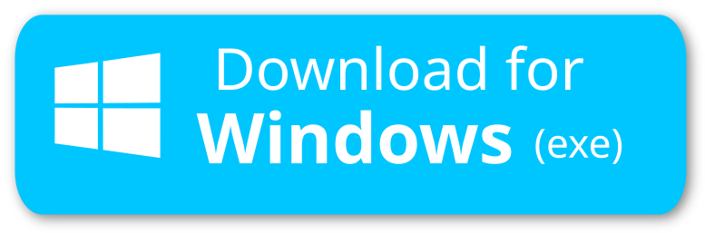
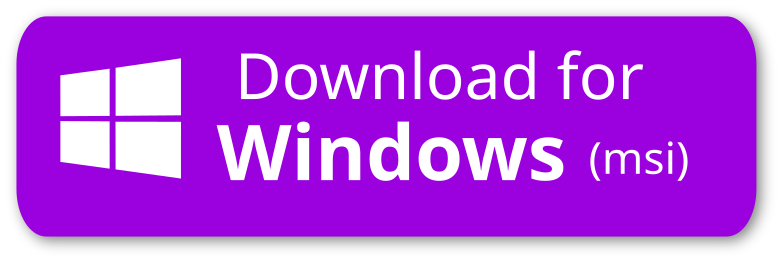

ytDownloader lets you download Videos and Extract Audios of different formats from hundreds of sites including but not limited to Youtube, Facebook, Tiktok, Twitch, Twitter, Instagram and so on...
ytDownloader is completely Free and Open Source. It's available for Linux, Windows and macOS
✅ Supports hundreds of sites.
✅ Video Compressor with Hardware Acceleration
✅ Multiple themes
✅ Download particular range
✅ Download subtitles
✅ Available in several languages
✅ Fast download speeds
✅ Configure download location
✅ Clean and modern UI
✅ No ads or trackers
The exe version lets you select custom installation location while msi version doesn't. Exe version has auto-update support while the latter doesn't have.
 Since the app is not signed, when you will try to open the app, macOS will not allow you to open it. So you will need to follow some steps to open it. You need to execute the following code in the terminal:
sudo xattr -r -d com.apple.quarantine /Applications/YTDownloader.app
You also have to download yt-dlp from homebrew
Installation command:
brew install yt-dlp